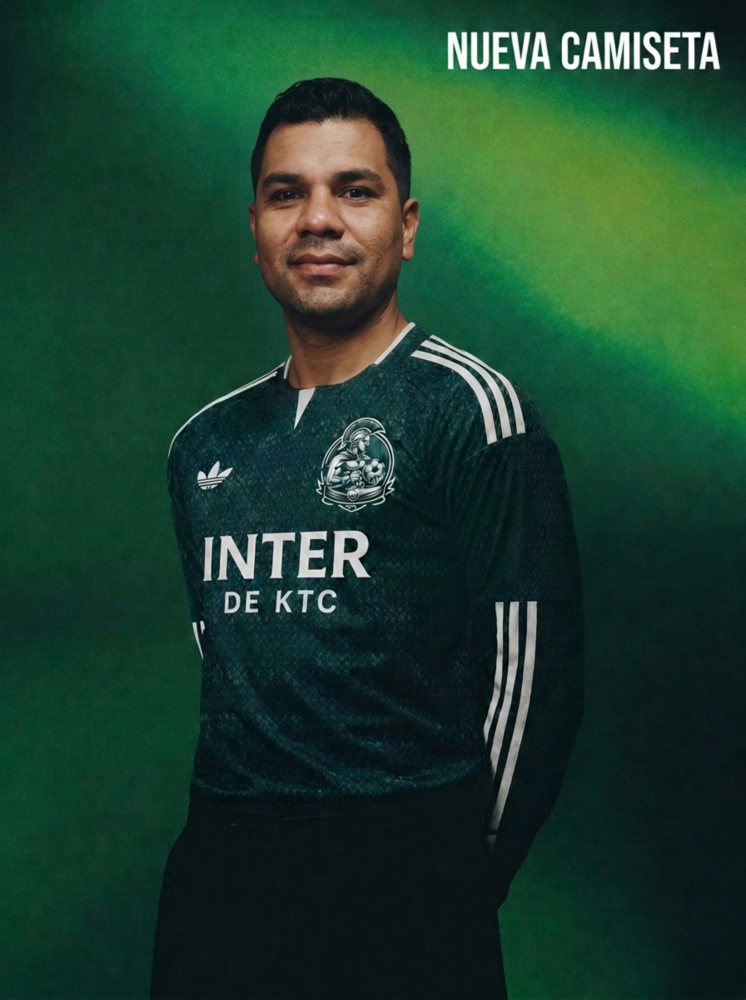
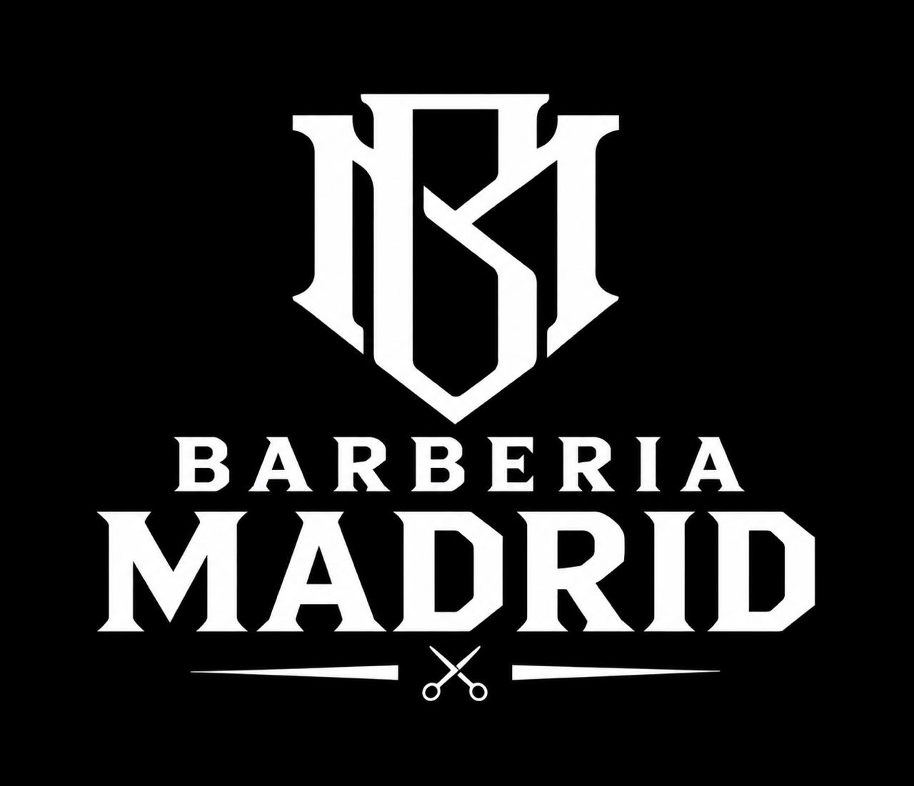

Somos un equipo de barrio que juega con el alma y se gestiona como una institución. Aquí nadie llega a jugar: llega a pertenecer.
Representamos a este barrio dentro y fuera de la cancha. Cada partido lo jugamos por la gente que nos vio nacer.
Directiva con roles, finanzas transparentes, métricas de rendimiento y un plan a 2030. Amateur en categoría, no en método.
No hay titulares por antigüedad ni amistad. Se gana en el entrenamiento, en la actitud y en el compromiso con el grupo.
Gritamos los goles como finales, sufrimos juntos las derrotas y celebramos juntos la vida. Eso es ser Inter.

Esta camiseta no se compra en una tienda. Se gana con sudor, compromiso y un año de esfuerzo. Es el símbolo máximo de pertenencia al club y el orgullo de vestir los colores del Paradero 14.
Rendimiento, logística y comunidad. Tres años de gestión amateur con estándares profesionales.
El club ha generado un ecosistema de pertenencia y disciplina para los jóvenes del Paradero 14.
En un formato de liga (3 pts victoria, 1 empate), promediar 2.44 unidades es un registro de élite. Asegura pelear los primeros puestos en cualquier tabla.
De cada 10 partidos, el equipo gana casi 8. Un Win Rate superior al 70% indica una brecha de rendimiento frente a los rivales. Inter no compite: domina.
Un promedio de más de 4 goles por encuentro. El sistema de juego no especula: está diseñado para atacar y someter al rival en su propio campo.
* Métricas calculadas en base a registros oficiales (Mar 2024 - Nov 2026).

Cuidado personal total en Barbería Madrid. El jugador más valioso de cada mes, elegido por rendimiento, compromiso y actitud, se lleva corte, barba y perfilado premium.
Una estructura directiva pensada como institución, no como grupo de amigos. Roles definidos, responsabilidades claras.
Visión a largo plazo. Define el rumbo institucional, representa al club y toma las decisiones estratégicas.
Optimización operacional. Planificación, logística, indicadores y mejora continua de cada proceso del club.
Transparencia y periodismo barrial. Cobertura de partidos, rendición de cuentas y voz del club hacia la comunidad.
Conexión humana y pertenencia. Acompañamiento al plantel, vínculo con el barrio y cultura de equipo.
De la cancha de barrio a la institución formal. Un plan por etapas, con hitos medibles.
Nace Inter de KTC en el Paradero 14. Primer plantel, primera camiseta, primeros 75 partidos.
Estructura directiva, sistema de incentivos y transparencia financiera operativa.
Personalidad jurídica como club deportivo y social. Acceso a fondos y alianzas institucionales.
Apertura de la escuela formativa para niños y niñas del barrio. Semillero propio.
Afiliación a la Asociación Nacional de Fútbol Amateur. Competencia oficial a nivel nacional.
Nace Inter de KTC en el Paradero 14. Primer plantel, primera camiseta, primeros 75 partidos.
Estructura directiva, sistema de incentivos y transparencia financiera operativa.
Personalidad jurídica como club deportivo y social. Acceso a fondos y alianzas institucionales.
Apertura de la escuela formativa para niños y niñas del barrio. Semillero propio.
Afiliación a la Asociación Nacional de Fútbol Amateur. Competencia oficial a nivel nacional.
Marcas y emprendimientos que apuestan por el fútbol de barrio con gestión profesional.
Hay espacio para nuevas marcas que quieran acompañar el camino a 2030.